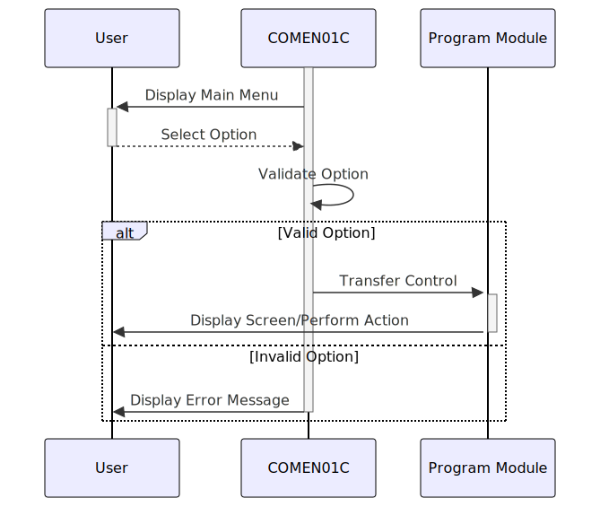

Gerado em: 1º de outubro de 2024
Título do Documento: Especificação de Navegação do Menu Principal da Aplicação CardDemo
Descrição Resumida:
Este documento detalha a funcionalidade do programa COMEN01C, o menu principal para usuários regulares no aplicativo CardDemo. Ele apresenta aos usuários um menu de opções, lida com suas seleções e os direciona para os módulos de programa apropriados.
Histórias do Usuário:
Como um usuário regular, quero ver um menu de ações disponíveis após o login para que eu possa navegar e usar facilmente o aplicativo CardDemo.
Épico Relacionado: 6 - Gerenciamento de Usuários e Segurança
Requisitos Técnicos:
- Exibição e Navegação do Menu:
- O programa exibe um menu de opções numeradas para o usuário.
- As opções do menu são preenchidas dinamicamente com base no tipo de usuário (regular ou administrador).
- O usuário pode selecionar uma opção digitando o número correspondente.
- O programa valida a entrada do usuário para garantir que seja uma opção de menu válida.
- Tratamento de Opções:
- Cada opção do menu corresponde a um módulo de programa específico no aplicativo CardDemo.
- Após a seleção do usuário, o programa transfere o controle para o módulo do programa selecionado.
- O programa passa dados relevantes, como ID do usuário e contexto do programa, para o módulo de destino.
- Tratamento de Erros:
- O programa exibe mensagens de erro apropriadas se o usuário inserir uma entrada inválida.
- O programa lida normalmente com erros durante a execução do programa e exibe mensagens informativas para o usuário.
Modelos Relacionados:
CDEMO-MENU-OPT: Representa uma opção de menu.
CDEMO-MENU-OPT-NUM: String - O número exibido para a opção do menu.CDEMO-MENU-OPT-NAME: String - O nome descritivo da opção do menu.CDEMO-MENU-OPT-PGMNAME: String - O nome do módulo do programa associado à opção.CDEMO-MENU-OPT-USRTYPE: String - O tipo de usuário com permissão para acessar esta opção (por exemplo, ‘U’ para usuários regulares, ‘A’ para administradores).
Configurações:
- Opções do Menu: Definidas dentro do programa
COMEN01C no parágrafo BUILD-MENU-OPTIONS.
- Cada opção é definida com um número (
CDEMO-MENU-OPT-NUM), nome (CDEMO-MENU-OPT-NAME), nome do programa (CDEMO-MENU-OPT-PGMNAME) e tipo de usuário permitido (CDEMO-MENU-OPT-USRTYPE).
- Mensagens do Programa: Armazenadas no copybook
CSMSG01Y.
- Tipos de Usuário: Definidos como constantes dentro do programa:
CDEMO-USRTYP-USER: Representa um usuário regular.CDEMO-USRTYP-ADMIN: Representa um administrador.
- Layouts de Tela: Definidos no copybook
COMEN01 para a tela do menu principal.
Melhorias de Código:
- Modularização: Crie parágrafos separados para validação de entrada, exibição de menu e tratamento de opções para melhorar a organização e legibilidade do código.
- Tratamento de Erros: Implemente uma rotina centralizada de tratamento de erros para fornecer relatórios de erros e registro consistentes.
- Documentação: Adicione comentários para explicar o propósito das variáveis, parágrafos e lógica do programa.
- Otimização de Desempenho: Use verbos e estruturas de dados COBOL mais eficientes quando aplicável. Por exemplo, considere usar
SEARCH e SEARCH ALL para pesquisar dentro de tabelas em vez de loops manuais.
Melhorias de Segurança:
- Validação de Entrada: Implemente uma validação de entrada mais robusta, como verificar o comprimento máximo da entrada e lidar com caracteres especiais, para evitar possíveis vulnerabilidades de injeção.
- Autorização: Antes de transferir o controle para um módulo de programa, verifique novamente a autorização do usuário para acessar essa funcionalidade específica.
- Registro: Registre todas as ações do usuário, incluindo seleções de menu e quaisquer mensagens de erro, para auditoria e análise de segurança.
Diagrama Conceitual:

–Made by “Smart Engineering” (by Compass.UOL)–